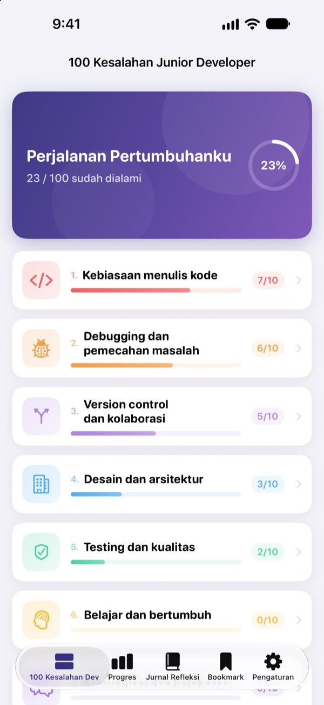
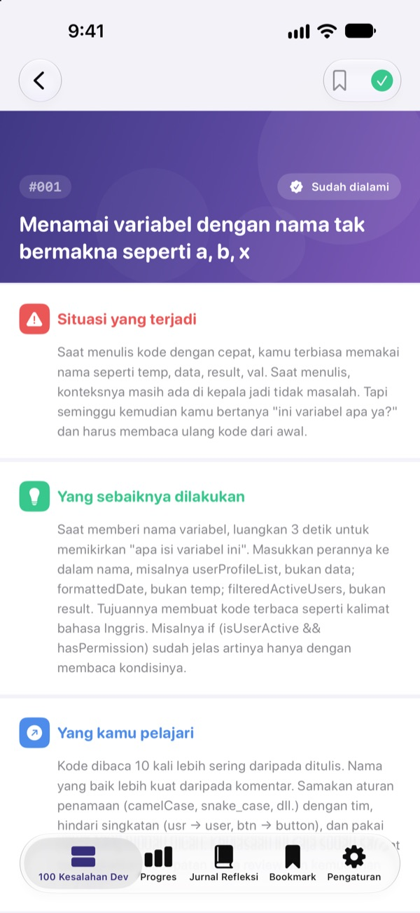
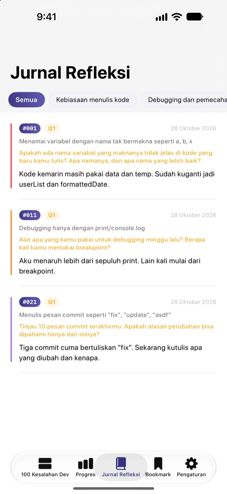
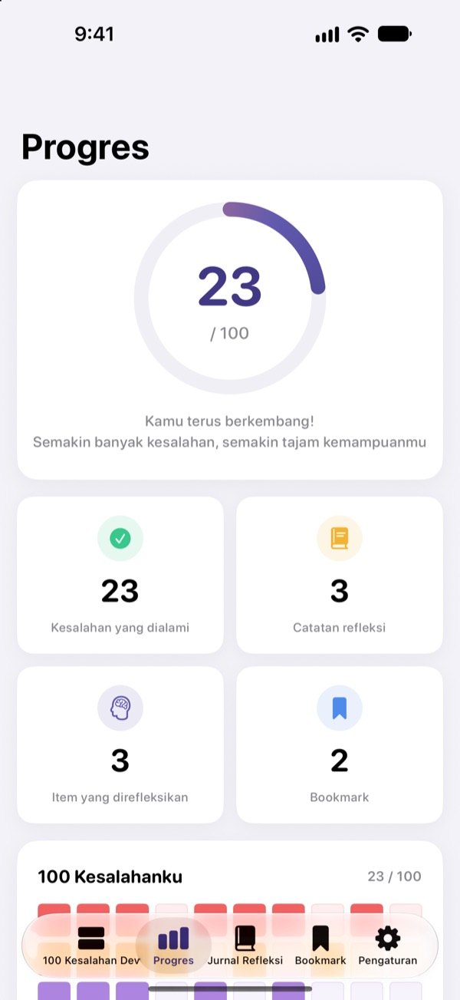

Kenali kesalahannya
sebelum kena batunya
Kumpulan 100 kesalahan yang paling sering dibuat developer pemula. Tiap kesalahan menjelaskan apa yang terjadi, apa yang harus dilakukan, dan apa pelajarannya, lalu kamu menjawab satu pertanyaan refleksi supaya tidak jatuh di lubang yang sama dua kali.
30 kesalahan pertama gratis. Bisa dipakai di iPhone, iPad, dan Mac.

Buka satu kesalahan
Ini 10 kesalahan di kategori pertama yang dibuka gratis, persis sama dengan isi app. Tandai Sudah dialami untuk yang pernah kamu alami.
Dapat komentar yang sama lagi saat code review?
Nama variabel yang tidak jelas, fungsi 200 baris, kode hasil copas di mana-mana. Semua senior pernah mengalaminya, tapi biasanya kita baru sadar setelah jatuh sendiri. 100 Kesalahan Junior Dev menunjukkan kesalahan-kesalahan itu lebih dulu dan mengajakmu merenungkan pekerjaanmu sendiri supaya tidak terulang.
Apa yang terjadi, apa yang dilakukan, apa pelajarannya
Setiap kesalahan dijelaskan dalam tiga bagian: apa yang terjadi, apa yang harus dilakukan, dan apa yang kamu pelajari.
Ada 10 kategori, dari kebiasaan menulis kode sampai keamanan dan performa, berisi kesalahan yang memang terus berulang di tim sungguhan.

Pertanyaan refleksi supaya melekat
Setiap kesalahan punya 4 pertanyaan refleksi, total 400. Jawab sambil memikirkan proyekmu sendiri, dan yang kamu baca berubah jadi pengalaman.
Jawabanmu terkumpul di Jurnal Refleksi per kategori, siap dibaca ulang kapan saja.

Lihat sejauh mana kamu berkembang
Centang kesalahan yang pernah kamu alami, dan progresmu bertambah per kategori maupun secara keseluruhan. Bookmark yang ingin kamu baca lagi.
Semuanya tersinkron lewat iCloud di iPhone, iPad, dan Mac.

Mulai dalam tiga langkah
- 1
Pilih kategori
Kebiasaan menulis kode, debugging, dan version control terbuka gratis.
- 2
Baca dan centang
Ketuk Sudah dialami pada kesalahan yang pernah kamu buat.
- 3
Refleksikan
Tulis jawaban, sependek apa pun. Jawabanmu masuk ke Jurnal Refleksi.
10 kategori
- Kebiasaan menulis kode
- #001–#010 · Gratis
- Debugging dan pemecahan masalah
- #011–#020 · Gratis
- Version control dan kolaborasi
- #021–#030 · Gratis
- Desain dan arsitektur
- #031–#040 · PRO
- Testing dan kualitas
- #041–#050 · PRO
- Belajar dan bertumbuh
- #051–#060 · PRO
- Komunikasi dan kolaborasi
- #061–#070 · PRO
- Deployment dan operasional
- #071–#080 · PRO
- Keamanan dan data
- #081–#090 · PRO
- Performa dan optimasi
- #091–#100 · PRO
Setiap kategori berisi 10 kesalahan, dan setiap kesalahan punya 4 pertanyaan refleksi.
30 gratis. Semua 100 dengan PRO.
Gratis
- 3 kategori pertama, 30 kesalahan
- 120 pertanyaan refleksinya
- Checklist, Jurnal Refleksi, progres, dan bookmark
- Sinkronisasi iCloud (iPhone, iPad, Mac)
100 Kesalahan Junior Dev PRO
- 7 kategori lainnya, 70 kesalahan lagi (#031–#100)
- 280 pertanyaan refleksi tambahan
- Semua pembaruan konten ke depannya
Pilih langganan bulanan, tahunan (hemat hingga 50% dibanding bulanan), atau beli sekali seumur hidup.
Tidak mengumpulkan data pribadi, tanpa alat analitik, dan tanpa iklan.
Pertanyaan umum
Apa saja yang gratis?
Semua 30 kesalahan beserta pertanyaannya di kategori Kebiasaan menulis kode, Debugging dan pemecahan masalah, serta Version control dan kolaborasi. Checklist, Jurnal Refleksi, progres, bookmark, dan sinkronisasi iCloud juga gratis.
Bagaimana memakai PRO di perangkat lain?
Masuk dengan Apple ID yang sama, lalu ketuk Pulihkan pembelian di layar langganan.
Bagaimana cara membatalkan langganan?
Kapan saja di Pengaturan › Apple ID › Langganan. Langganan diperpanjang otomatis kecuali dibatalkan paling lambat 24 jam sebelum periode berjalan berakhir. Paket seumur hidup hanya dibayar sekali.
Data tidak tersinkron antar perangkat.
Pastikan semua perangkat masuk ke iCloud dengan Apple ID yang sama dan iCloud untuk app ini sudah aktif di Pengaturan. Sinkronisasi juga butuh koneksi internet.
Bagaimana menghapus semuanya?
Ketuk Reset semua data di pengaturan app. Centang, jawaban, dan bookmark akan terhapus dan tidak bisa dikembalikan.
Bisa dipakai di perangkat apa saja?
iPhone, iPad, dan Mac. PRO terbuka di semua perangkat dengan Apple ID yang sama.
Apakah data saya dikirim ke mana-mana?
Tidak. Centang dan jawabanmu hanya tersimpan di perangkatmu dan iCloud milikmu sendiri. App ini tidak mengumpulkan data pribadi, tanpa alat analitik maupun iklan.
Ada pertanyaan atau saran? Kirim email ke leeo@kakao.com.